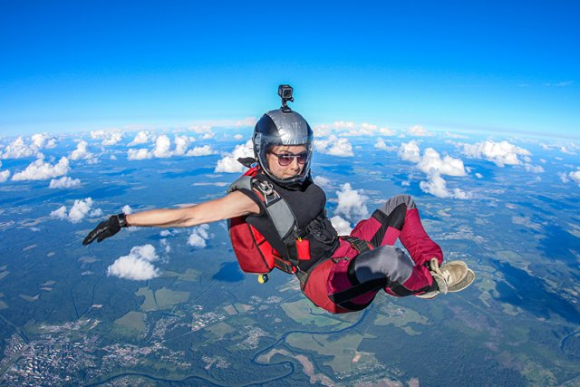
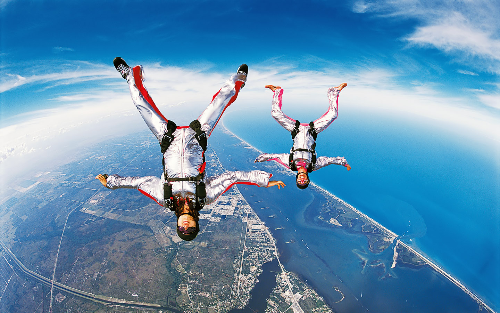

Présentation
- 
Saut en parachute en tandem
Ces sauts nécessitent la participation d’un instructeur tout au long du parcours – de l’instruction à l’atterrissage. Vous aurez l'occasion de vivre une chute libre pendant près de 40 secondes de sensations inoubliables. C'est ce qui distingue un saut en tandem d'un saut en solo, lorsque le parachute s'ouvre automatiquement 3 secondes après la séparation de l'avion. De plus, à l'étape la plus difficile - l'atterrissage - l'instructeur vous assure d'atterrir sur ses pieds. Cela rend le saut aussi sûr et confortable que
Vivez le frisson de la chute libre, la joie de planer sous un parachute et soyez assuré d'un atterrissage en toute sécurité au point désigné.
Saut en parachute avec un instructeur : qu'est-ce que c'est ?
Un parachute tandem est un système spécialement conçu pour les sauts en binôme sous une même voile. Le tandem maître et passager sont fixés l'un à l'autre à l'aide d'attaches spéciales. L'instructeur prend en charge le travail de contrôle du parachute. Le deuxième participant au saut ne peut que profiter du plaisir et de la poussée d’adrénaline – des impressions vives qui resteront gravées dans sa mémoire toute sa vie. Cette méthode permet de toucher le sol à un point prédéterminé, ce qui constitue la principale garantie de sécurité.
-
Ce qui est inclus dans le service
Ce qui est inclus dans le service Un saut en parachute tandem est une excellente occasion de sauter d'une hauteur allant jusqu'à 3000 mètres sans aucune formation particulière. Tout ce dont vous avez besoin, c'est d'une soif d'aventure, d'une bonne humeur, de vêtements de sport et de chaussures adaptées à la météo. Nous nous occupons de tout le reste : examen médical, brèves instructions (environ 20 minutes), équipement spécial, organisation complète.
Briefing
Seulement 15 minutes de briefing au sol et vous embarquez dans l'avion. Contrairement aux sauts en solo, le tandem ne nécessite pas plusieurs heures d'entraînement, car L'ensemble du processus est contrôlé par un instructeur. Il a plus de 10 000 sauts à son actif et un sac à dos équipé d'un système de parachute fiable.Chute libre
Elle dure jusqu'à 30 à 40 secondes à une vitesse allant jusqu'à 200 km/h, et se développe déjà dans les 10 premières secondes. C’est l’étape la plus mémorable et la plus extraordinaire – la liberté absolue, un vol dans la réalité. Au niveau 1000 m, l'instructeur ouvre le parachute et prend le contrôle à partir de là.Pilotage
Le vol stationnaire sous un parachute prend environ 5 à 6 minutes lors d'un saut d'une hauteur de 3 km. Si désiré, l'élève a la possibilité d'essayer de contrôler lui-même le parachute sous l'œil attentif d'un instructeur expérimenté. C'est facile à apprendre et une joie à faire. Il ressentira les particularités du saut et tentera d'appliquer en pratique les connaissances de contrôle du parachute qui ont été abordées lors du briefing. A une altitude d'environ 500 m, l'instructeur prend les commandes pour créer la bonne trajectoire jusqu'au site d'atterrissage. Dynamisme et émotions lumineuses incomparables sont garantis !Atterrissage
Notre club emploie des parachutistes qui ont plus de 10 000 sauts à leur actif et détiennent un certificat d'instructeur de saut en tandem DOSAAF Russie. Au moment de toucher le sol, le passager lève ses jambes vers sa poitrine afin que l'atterrissage se produise uniquement sur les pieds de l'instructeur, qui le fait magistralement grâce à une pratique approfondie. Cela permet d’éviter les blessures.
- 
Saut en parachute en binôme avec un instructeur – conditions
Hauteur 3000 mètres.
Chute libre jusqu'à 30-40 secondes.
Jours : de mai à octobre – tous les jours sous réserve de conditions météorologiques favorables ; d’octobre à mai – les week-ends, si le temps le permet.
Restrictions de poids (le paiement supplémentaire est effectué uniquement à l'aérodrome après pesée de l'équipement complet. Le poids approximatif de l'équipement est de 6 kg) : jusqu'à 80 kg – sans frais supplémentaires ; de 80 kg à 120 kg – supplément de 1000 roubles pour chaque 10 kg de poids.
Age : à partir de 7 ans. Les enfants de moins de 18 ans sont admis avec l'autorisation écrite de leurs parents et leur présence personnelle à l'aéroport.
Documents : passeport, police d'assurance médicale. Il est interdit de fumer, de boire de l'alcool, de jeter des détritus et de sortir sur la piste sans l'accompagnement d'un instructeur sur l'aérodrome.
Aérodrome : aérodrome de Shcheglovo, aérodrome de Gorskaya. Les personnes sous l'influence de drogues ou d'alcool ne sont pas admises.
Pré-inscription obligatoire.
L'assurance est incluse dans le prix de la prestation.
Saut en parachute pour deux personnes - hauteur
La hauteur optimale pour les débutants dans un saut en tandem est considérée comme allant jusqu'à 3000 m, car aucune formation particulière n'est requise pour le participant. En même temps, vous profiterez d’une longue chute libre et vous n’aurez pas à penser à la technique, en comptant sur l’instructeur.
.jpg)
Avantages du parachutisme en tandem
- Niveau de sécurité élevé, car le vol est contrôlé par un spécialiste expérimenté - vous atterrirez au point spécifié.
- Equipement moderne qui subit un entretien régulier.
- L'un des meilleurs prix de la ville.
- De mai à octobre, l'aéroclub est ouvert 7 jours sur 7 (si le temps le permet).
- Des commentaires positifs de clients qui nous recommandent à leurs amis, collègues et reviennent eux-mêmes.
Tournage vidéo
En option supplémentaire, commandez un tournage vidéo. Coût : 70euro. Vous recevrez une vidéo éditée avec une musique libre de droits et facile à partager sur les réseaux sociaux.
Information a savoir
Qui peut faire ce saut en parachute ?
- À partir de 12 ans et jusqu'à 80 ans, au-delà, nous consulter. Les enfants de 12 à 15 ans doivent présenter un certificat d’un spécialiste ORL.
- Les mineurs doivent impérativement venir avec un représentant légal faute de quoi ils ne sauteront pas.
- Vous devez avoir un IMC inférieur à 30 et poids max. de 100 kg. Au-delà de 90 kg, nous consulter.
- La pratique du parachutisme nécessite de nous fournir un certificat d'aptitude médicale à la pratique du parachutisme, délivré par un médecin généraliste. Ces certificats ont une durée de validité de 12 mois. (En plus du certificat ORL pour les 12-15 ans)
Infos pratiques :
- Licence à régler sur place : 5€ (prix à titre indicatif).
- Les caméras personnelles ne sont pas acceptées.
- Selon la saison, une combinaison coupe-vent vous est fournie si nécessaire.
- Tenue sportive/décontractée conseillée, (type survêtements, leggings, jeans, sweatshirt) et des chaussures type tennis.
- Saut à 5 depuis le même avion possible, à préciser à la réservation.
- Ne pas avoir fait de plongée sous-marine dans les 48h ni avoir consommé d'alcool dans les 12 dernières heures.
Prix
-
Prix : 269.95€( Jour ferier + week-end)
-
Prix : 249.95€ (Semaine)
-
Prix : 279.95€( Jour ferier + week-end)
-
Prix : 269.95€(Semaine)
-
Prix : 69.95€
-
Prix : 99.95€
Saut en parachute en tandem
Saut en parachute en tandem
Saut en parachute Pro
Saut en parachute Pro
Reportage Video
Reportage Video + Photos
Contact
Adresse 1 rue de la liberté
Code postal: 5900
Ville: Bruxelles
Adresse mail : skyjumps@gmail.com
Numero Telephone: 065.54.52.74